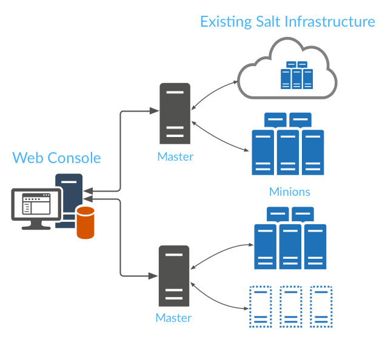

SaltStack Enterprise Web Console integrates with your existing SaltStack infrastructure to provide additional management capabilities and reporting.
SaltStack Enterprise Web Console uses a REST API and a database connector to seamlessly connect to your existing infrastructure. All of your existing commands, states, and user privilege assignments continue to work as expected, with the added functionality provided by SaltStack Enterprise Web Console.
